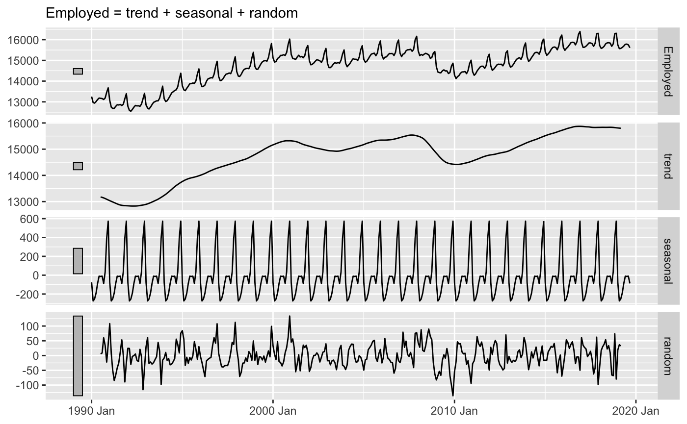
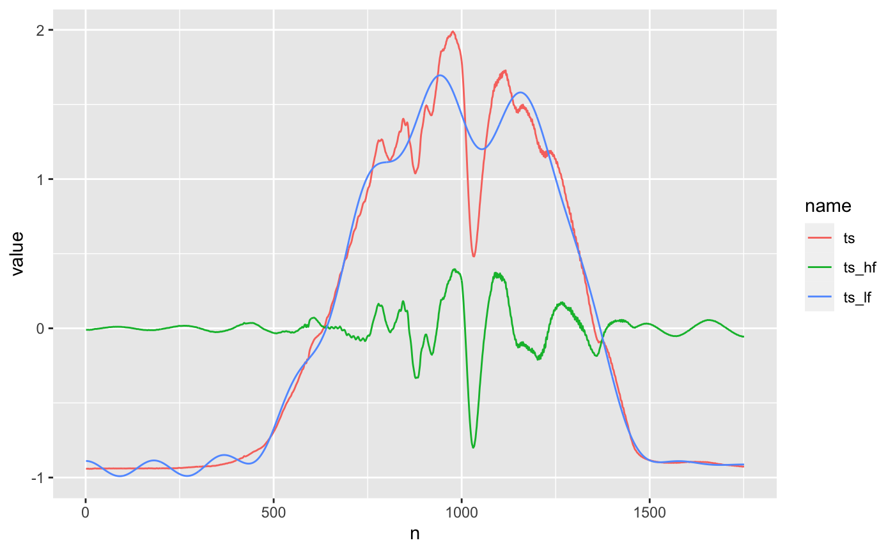
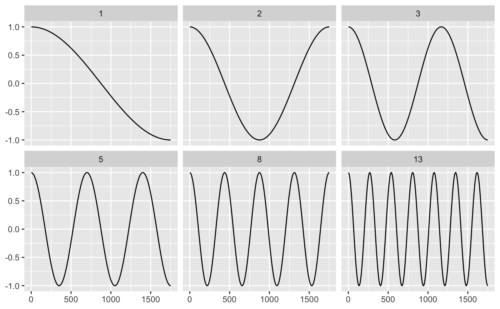
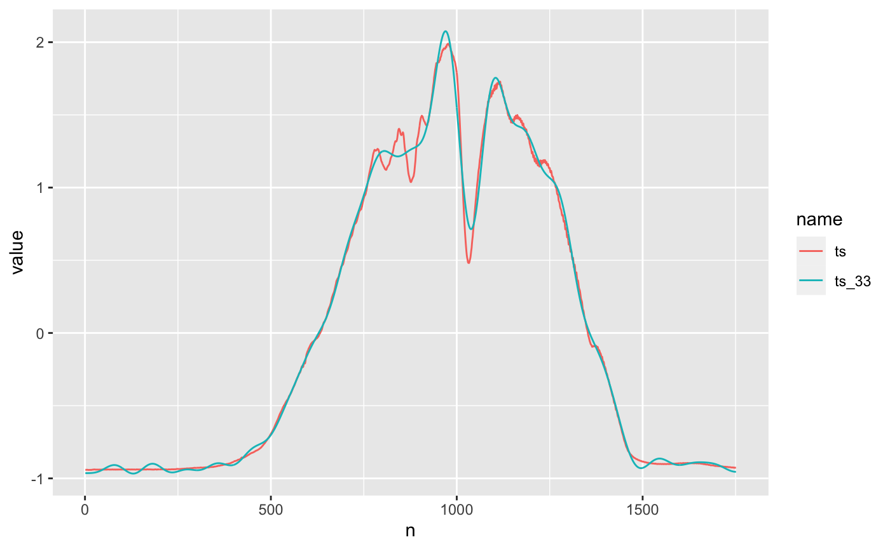
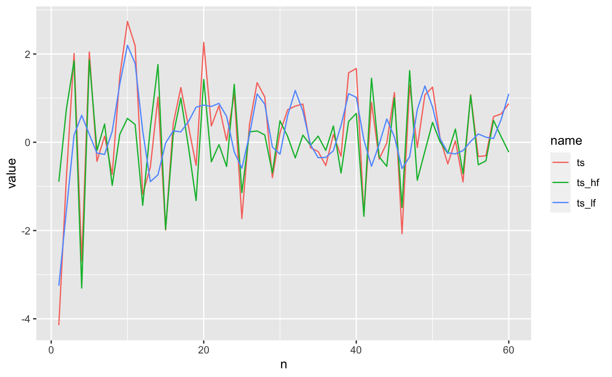

Introduction
The discrete cosine transform (DCT) can provide significant dimensionality reduction for time series, improving accuracy in time series classification and clustering. That’s the topic my previous post.
Besides being a useful tool, DCT is fascinating in it’s own right. It is a perfectly reversible transform that provides a principled way to remove irrelevant information.
How is this possible, and why does it work so well for time series? I’ll try to answer this by
- representing time series as combinations of different time series
- explaining how the discrete cosine transform is a combination of cosine waves of varying strength and frequency
- demonstrating that the strength and frequency of cosine waves are effective dimensionality reduction criteria
Lastly, I’ll share some resources on data compression: the field of study where DCT originated, and why it has fundamental connections to machine learning.
Time series as combinations of components
A common tool in time series analysis is time series decomposition, where a series is decomposed into the trend, seasonal, and random components. These components can be added or multiplied together to reconstruct the original time series, depending on the model.
library(fpp3) library(tsrecipes) library(tidyverse) us_retail_employment <- fpp3::us_employment %>% filter(year(Month) >= 1990, Title == "Retail Trade") %>% select(-Series_ID) us_retail_employment %>% model(classical_decomposition(Employed, type = "additive")) %>% components() %>% autoplot() + labs(x = NULL, y = NULL, title = NULL)

Another way to think about decomposition is by frequency. Think of frequency as the waves and wiggles in the time series. Both the sharp, quick wiggles (high frequency) and wide, slow ones (low frequency).
For example:
ts <- ethanol$ts[[1]] ts_dct <- tibble( ts = ts, dct = fdct(ts), n = 1:length(ts) )
ts_recon <- ts_dct %>% mutate( dct_lf = ifelse(seq_along(dct) <= 20, dct, 0), ts_lf = dtt::dct(dct_lf, inverted = TRUE), dct_hf = ifelse(between(seq_along(dct), 20, 1751), dct, 0), ts_hf = dtt::dct(dct_hf, inverted = TRUE) ) ts_recon %>% pivot_longer(c(ts, ts_hf, ts_lf)) %>% ggplot() + geom_line(aes(n, value, color = name))

the original time series (in red) is decomposed into a low-frequency series (blue) and a high-frequency series (green). And like in classical time series decomposition, we can add the components back together to exactly reconstruct the series.
You can also think of the low-frequency component as time series smoothing, like the trend in classical decomposition (or a simple moving average). It’s not as useful as other smoothing techniques, in general, because it a little too wavy. Note the blue waves that randomly appear in the flat section from 0 to 500.
The discrete cosine feature is what makes all this possible. In the next section, I’ll explain how it really works.
Discrete cosine transform: cosine combinations
To accomplish the frequency decomposition, we need basic units of frequency, like the recurring units of time (week, month, year) in seasonal decomposition.
For the discrete cosine transform, this is a sequence, the same length as the time series, of cosine waves that uniformly increase in frequency.
It’s easier to imagine by way of examples. Below are 6 low-frequency waves part of the 1751 cosine waves needed to represent the red time series (of length 1751) in the previous section.
fib <- c(1, 2, 3, 5, 8, 13) cosine1 <- ts_recon %>% rowwise() %>% mutate( cosine = list(cosine(n, j = 1:1751)), cosine_scale = list(dct * cosine), i = list(1:1751) ) %>% filter(n %in% fib) %>% unnest(c(i, cosine, cosine_scale)) %>% ggplot() + geom_line(aes(i, cosine)) + facet_wrap(~n) + labs(x = NULL, y = NULL) cosine1

Frequency is only one component: we also need the strength (or amplitude) of the wave. The strength of a cosine wave is typically called the DCT coefficient. Calculating the coefficients is the real essence of the discrete cosine transform. For any time series of length 1751, the fundamental cosine wave units are the same; what changes are the coefficients.
Below are the cosine waves for the red time series.
cosine1_scaled <- ts_recon %>% rowwise() %>% mutate( cosine = list(cosine(n, j = 1:1751)), cosine_scale = list(dct * cosine), i = list(1:1751) ) %>% filter(n %in% fib) %>% unnest(c(i, cosine, cosine_scale)) %>% ggplot() + geom_line(aes(i, cosine_scale)) + facet_wrap(~n) + labs(x = NULL, y = NULL) cosine1_scaled

Let’s think about the how the strength might change with frequency. With this small sample of waves, it’s hard to get a sense of the changes, so let’s look back at the decomposition.
The blue, low-frequency component ranges from -1 to 2, while the high frequency red component oscillates mostly around zero, with the largest wave measuring about 1 from peak to trough.
Plotting the strength of the wave versus the frequency, the strength appears to decrease towards zero as the frequency increases.
ts_recon %>% ggplot(aes(n, dct)) + geom_line() + scale_y_continuous(trans = "atanh") + labs(x = "frequency", y = "strength")

If the strength of some of these waves are so small, do we really need them to reconstruct the time series?
Time series dimensionality reduction
Since the high-frequency waves have around zero strength, let’s get rid of them. I’ll set the terms equal to zero, and attempt to reconstruct the red time series:
ts_recon <- ts_dct %>% mutate( dct_20 = ifelse(seq_along(dct) <= 20, dct, 0), ts_20 = dtt::dct(dct_20, inverted = TRUE), dct_20_40 = ifelse(between(seq_along(dct), 20, 40), dct, 0), ts_20_40 = dtt::dct(dct_20_40, inverted = TRUE), dct_40 = ifelse(seq_along(dct) <= 40, dct, 0), ts_40 = dtt::dct(dct_40, inverted = TRUE) )
ts_recon %>% pivot_longer(c(ts, ts_40)) %>% ggplot() + geom_line(aes(n, value, color = name))

That’s a pretty decent reconstruction. How many terms did I set to zero? 1711. I’ve encoded a huge amount of the information in only 40 dimensions!
This is the real power of the discrete cosine transform.
But so far we’ve only reduced dimensions by the frequency. We can also cut dimensions based on the strength of the coefficients. In the following example, I set all the coefficients below abs(15) to 0. The result is 33 dimensions.
ts_recon_low_dim <- ts_recon %>% mutate( dct_33 = ifelse(abs(dct) >= 15, dct_40, 0), ts_33 = dtt::dct(dct_33, inverted = TRUE) )
ts_recon_low_dim %>% pivot_longer(c(ts, ts_33)) %>% ggplot() + geom_line(aes(n, value, color = name))

Overall, still pretty good, but 0-500 and >1500 look a little too wiggly. Both reconstructions have pretty similar mean squared error to the original red time series.
ts_recon_low_dim %>% select(ts, ts_33, ts_40) %>% as.matrix() %>% t() %>% proxy::dist() #> ts ts_33 #> ts_33 2.3629005 #> ts_40 2.2792833 0.6230297
How much reduction is possible?
In the last example, the reconstruction was reasonably accurate using only 2% of the original dimensions! How much can you expect to reduce in general? And which frequencies should you remove?
Unfortunately, there’s no way to now ahead of time. In data compression, our understanding of human visual and auditory perception determines which features have little impact on the reconstruction quality. For example, the average human ear hears sound in the 20 Hz to 20 kHz frequency ranges, so we can safely remove those waves no matter what.
With the last time series, we first excluded the high-frequency components, but in some time series high-frequencies are the most important features.
ts_dct2 <- tibble( ts = prices$ts[[1]], dct = fdct(ts), n = 1:length(ts) )
ts_recon2 <- ts_dct2 %>% mutate( dct_lf = ifelse(seq_along(dct) <= 30, dct, 0), ts_lf = dtt::dct(dct_lf, inverted = TRUE), dct_hf = ifelse(between(seq_along(dct), 31, 60), dct, 0), ts_hf = dtt::dct(dct_hf, inverted = TRUE), dct_str = ifelse(abs(dct) > 6.15, dct, 0), ts_str = dtt::dct(dct_str, inverted = TRUE) )
ts_recon2 %>% pivot_longer(c(ts, ts_hf, ts_lf)) %>% ggplot() + geom_line(aes(n, value, color = name))

In this time series of length 60, I chose the top 30 low frequency and high frequency coefficients. The blue, low frequency reconstruction doesn’t capture enough of the variation. As we’ll see below the high-frequency reconstruct has much lower mean squared error.
Another option is the top 30 largest coefficients, which cuts the error by half!
ts_recon2 %>% select(ts, ts_hf, ts_lf, ts_str) %>% as.matrix() %>% t() %>% proxy::dist() #> ts ts_hf ts_lf #> ts_hf 6.413039 #> ts_lf 7.437955 9.820909 #> ts_str 3.663415 6.389416 7.458258
And in general, it is typically better to chose the largest coefficients, rather than low or high frequency ones. Even this isn’t a silver bullet: you still have to decide how many of the largest coefficients you want to include.
Arbitrary times series have no guidelines like the ones sensory perception provides in data compression. You have to either use your judgment, or decide using some selection procedure.
Dimensionality reduction for time series classification
All of the previous material has been on dimensionality reduction for a single time series1.
While I think it’s useful in understanding what the discrete cosine is and does, doing dimensionality reduction on a set of time series you want to cluster or classify requires a whole new approach.
That explanation will be part of an upcoming blog post.
Data compression
Data compression is a fascinating discipline with surprising connections to machine learning.
The field can be described as
the art or science of representing information in a more compact form. - Sayood, K. Introduction to Data Compression
Compact forms have natural utility in machine learning by way of dimensionality reduction. Principle Component Analysis (PCA) can be thought of as a data compression algorithm, as well as a reduction technique.
Both fields also seek correlations2. In data compression, correlation implies redundant information, and the goal is to reduce the data to the minimum set of uncorrelated data.
This approach is extremely relevant in machine learning, where highly correlated features are much difficult to work with and may even harm accuracy.
I hope this gets you interested in data compression!